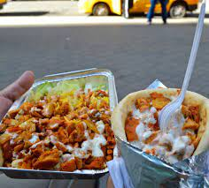

Chicken Gyro

Recipie Description
Gyro is recipie containing marinated chiken and pita bread with combination of spicy
saugue of different varities
Ingredients
- Marinated Chiken and pita bread
- Rice of two different varities
- spices to enhance flavour
- sausage of white, barbecque, mint and hot sauce
Step
- Marinate the chiken for about 4 hours
- add spices as in pepper, chilli paste
- garnish with giner galic paste